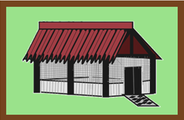
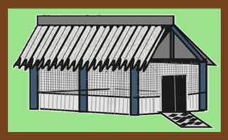
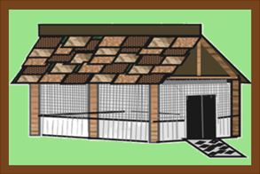

Products
Enclosed Sandboxes are built with sturdy posts, beams, and roof; provide shade and keeps the sand in the sandbox. The perimeter of the shallow hole and bottom are cemented. Greenhouse plastic panels go a third of the height of the walls to block the sand from escaping. The remaining height of the wall has stronger pet screens installed.There is a short, marine-grade, no-rust, metal grated pathway up to the entrance to help remove sand from their paws while walking out. The doorway has removable brushes mounted to the sides of doorway to brush off sand while exiting. Be sure to close the entrance/exit door. So the sandbox doesn't become a litter box!
With so many options to mix and match, below are a few examples to help give you a few ideas.
Example One
Roof is a regal red corrugated asphalt-infused metal sheets with black powder-coated aluminum Post and Beams.
Example Two
Roof is a powder-coated corrugated metal roof with navy blue powder-coated Aluminum Post and Beams.
Example Three
Roof is a brown medley asphalt shingles with cedar post and beam.
Roof and Post and Beams
The following are roof and post and beams materials and color options.
- Roof Options
- We have 3 options of roofs to choose from: Powder Coated Metal Roof, Asphalt Infused Metal Roof, and Asphalt Shingles Roof. Powder Coated Metal Roof will not peel, fade, or rust, low maintenance, and can withstand falling limbs, hail, and snow and comes in 6 colors; Asphalt Infused Metal Roof reduces noise, wind resistant up to 180 mph, and comes in 4 colors; and Asphalt Shingles Roof is the most economical, has a limited 20 -year warranty with granules of copper on the shingles to reduce moss buildup and comes in 4 colors.
- Post and Beam Options
- Hemlock, Pine, and Cedar are the wood post and beams we offer, and aluminum, powder coated post and beams with 6 colors to choose from. All of our post and beams are strong, last long, resistant warping and damage from insects. Hemlock is the best of the wood post and beams for severe weather, and resistance to rot and fungal decay. Pine is the most economical and has been pretreated and pressed for beauty and strength. Cedar can last decades with proper care and maintenance, and it is more flame resistant than most wood. Lastly, the aluminum, powder-coated post and beams are durable and preferred for use in coastal areas.